Nexo nas Escolas
O Nexo nas Escolas é um projeto que promove debates em escolas, focando na capacitação dos alunos. Ele ocorre com estudantes de ETECs da Mooca, com etapas presenciais entre agosto e setembro de 2024, e final no Salão Nobre da FDUSP.

Somos uma extensão da Faculdade de Direito do Largo de São Francisco criada com intenção de fomentar a participação política e o debate ativo com os Três poderes e a sociedade civil.
O Nexo Governamental é uma organização estudantil da Faculdade de Direito da USP que conecta acadêmicos e profissionais ao setor público. Eles promovem a discussão e criação de políticas públicas, oferecendo projetos, eventos e pesquisas que visam impactar positivamente a sociedade e a governança pública.
Assista ao vídeo da presidente do Nexo Governamental explicando a missão e os projetos da organização.

O nosso objetivo é aproximar a comunidade civil da atuação dos três poderes da República Federativa do Brasil, por meio de uma série de projetos inovadores, com os quais buscamos promover o envolvimento dos cidadãos no processo de governança e na construção de uma sociedade mais participativa e inclusiva. Junte-se a nós e faça parte desse movimento que conecta a sociedade com as esferas do poder em nosso país.
Com um compromisso sólido com a inovação, o Nexo Governamental aproxima acadêmicos e profissionais do setor público.


Atualmente, somos 300 membros e estamos em 80 universidade 🚀

Estamos sempre crescendo e inovando!
O Nexo nas Escolas é um projeto que promove debates em escolas, focando na capacitação dos alunos. Ele ocorre com estudantes de ETECs da Mooca, com etapas presenciais entre agosto e setembro de 2024, e final no Salão Nobre da FDUSP.
O Nexo realiza eventos que reúnem especialistas e autoridades para discutir temas atuais, como tecnologia, e direito. Esses encontros promovem debates sobre o impacto de inovações, como a inteligência artificial, na sociedade.
O Nexo realiza viagens, como a de Brasília, onde os participantes visitam instituições como o Congresso e o STF. Essas viagens oferecem uma imersão no ambiente político e jurídico do Brasil, ampliando o aprendizado prático sobre temas importantes.

Use este formulário apenas se necessário!
O formulário pode não ser respondido devido a alta demanda!
Agradecemos a compreensão ( :